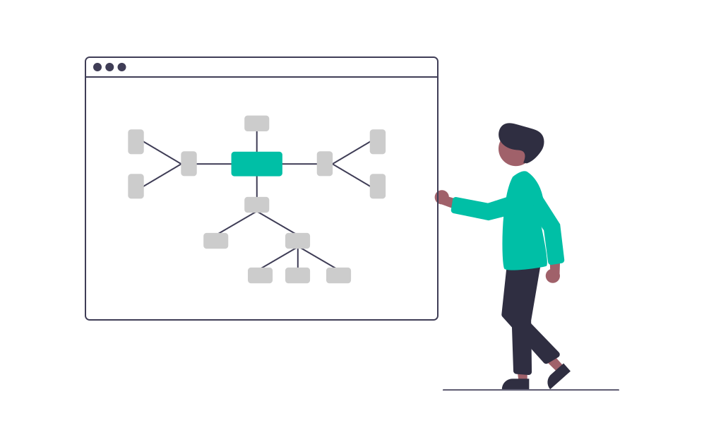

My Linux Development Workstation
Code Editors and IDEs

1. Visual Studio Code
I was an Atom user in the past. When VS Code became more and more popular, I tried it a few times but always went back to Atom. But after trying it for a couple of weeks, I discovered stuff that I never expected from a code editor like this. Now, this is my go to file editor.
I use it to editing simple files in Python or C++ or to manage Jekyll static websites.
2. PyCharm
I work with a lot of Django projects for the organization I’m a part of. PyCharm is my preferred IDE in this case. PyCharm has tons of advantages when compared to text editors like VS Code in terms of supported functionality.
JetBrains IDEs are fantastic. They do everything I want and everything I need. Fast while working, extremely good customization, very good interface, VCS integration, code suggestions have saved my life.
3. WebStorm
I’ve worked on some pet projects on React. WebStorm is the IDE for JavaScript by JetBrains. So all the features of a JetBrains IDE is here as well.
WebStorm provides a lot of tools and works nicely as a single complete package, most of the things that it does extremely well are more suited for advanced workflows.
4. Android Studio
I started as an Android app developer in my professional career. I used to build apps on native Java and Kotlin so Android Studio was my most used application.
I’ve switched to backend now but from time to time I use the Studio to maintain some already existing apps. I also use Studio to write Flutter apps.
5. IntelliJ IDEA
I picked up IDEA while working on academic projects during my undergrad days. I got used to it and never looked back. The helpful friend that is IntelliJ while writing Java codes got me into this JetBrains environment.
7. GoLand
I recently started learning Go. Go is an open-source programming language focused on simplicity, reliability, and efficiency. I find it’s simple yet powerful abilities. I use GoLand (yes, another IDE by JetBrains) to write Go codes.
Did I mention I’ve the pro license for all the JetBrains products?
Database Management
1. pgAdmin4
I mostly work with PostgreSQL for my work projects. pdAdmin is the most popular and feature rich Open Source administration and development platform for PostgreSQL.
It is quite easy to use. The cons I would mention are that the query editor is not up to the mark and the slow responses from the servers. Still I was using it for months until I switched to the option mentioned below.
2. DataGrip
I found a great replacement in DataGrip. This is an IDE by JetBrains. So you might guess it will be feature rich.
DataGrip detects probable bugs in your code and suggests the best options to fix them on the fly. Once you learn the shortcuts, you can find things very fast. The auto-complete features and the query suggestions saves me a lot of time.
Tools

1. Postman
When you’re working on backend techs and dealing with a lot of APIs like me, you need a great API testing tool. Postman is the most popular one, but I have tried Insomnia too.It’s a beautifully designed and very well thought out tool. The con I would like to mention is the high price for working in collaboration with team members.
2. GitKraken
Git is central to most contemporary development workflows. I know you love your Git commands. I do too. But while managing a large project with multiple contributors this causes more harm than good.
GitKraken is elegant and easy to use– it’s easy to fast forward various branches, checkout branches, submit pull requests and commit. I’m really impressed with the ease of use, yet power, that GitKraken offers in a graphical interface for Git.
Communication
1. Slack
All of my work channels are here. Slack is more spirited than any other team communication application. The new features add more to the gold standard that is Slack. No enterprise stuff, just simple connection with your teammates.
2. Microsoft Teams
For a brief period of time, I had to use Teams for communicating with a team. To be completely honest, I don’t like Teams. The UI, workflow, and everything seemed non-spirited to me. It’s a good tool for large enterprises, but for an engaging team Slack would receive the first prize from me.
3. Zoom
Meeting client boomed during the pandemic. End of story. I’d prefer Google Meet if it had some of the exclusive features Zoom has.
Images taken from unDraw